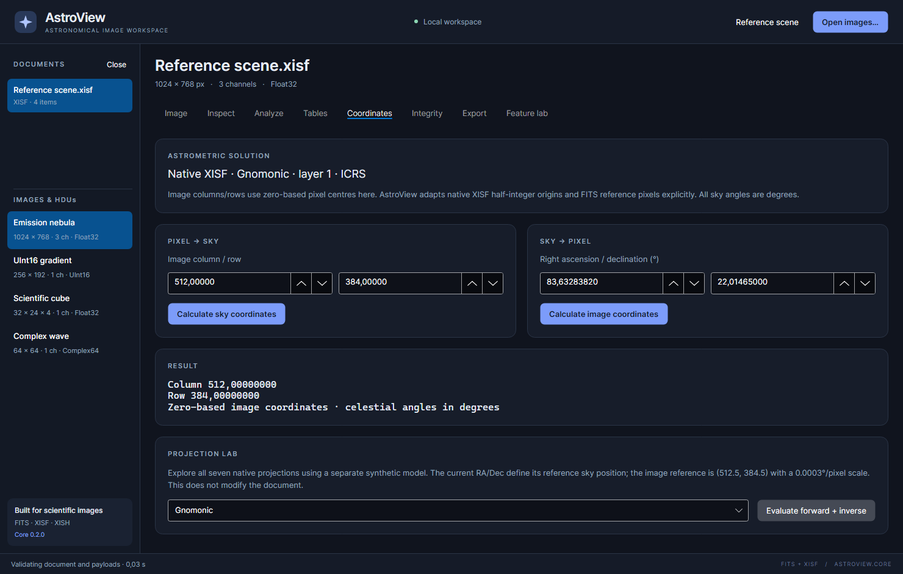

Image and sky coordinates
The Coordinates workspace transforms positions using a supported astrometric solution stored with the selected image. It also contains a separate projection calculator for experimentation.

Check the solution first
Read ASTROMETRIC SOLUTION before calculating. A supported native XISF solution is used when available; otherwise the application can use recognized FITS WCS metadata. The reference emission nebula provides a native Gnomonic solution for this exercise.
A file can contain astrometry-related properties that the current implementation cannot evaluate. Preserved WCS metadata is still visible in Inspect, but it is not automatically an available coordinate model. AstroView does not plate-solve an unsolved image when you open this workspace.
Pixel to sky
- Select the desired image.
- Enter Image column / row under PIXEL → SKY.
- Click Calculate sky coordinates.
- Read right ascension (RA), declination (Dec) and the input image position in the RESULT area.
Image positions are zero-based pixel centres in this workspace: (0,0) is
the first pixel centre. You can also click a pixel in the Image workspace to
select a position, then switch to Coordinates. The application adapts FITS
reference pixels and native XISF half-integer centres internally.
Sky to pixel
- Enter Right ascension / declination (°) under SKY → PIXEL.
- Click Calculate image coordinates.
- Read the zero-based column and row in the result.
Enter both angles in degrees. RA expressed in hours must first be multiplied
by 15; 5.5 hours is 82.5 degrees. Do not type an hh:mm:ss string into a
numeric degree field. A resulting position outside the image is not necessarily
an error: that sky location may be outside the recorded field. Positions outside
the projection's mathematical domain can instead produce an explicit error.
To practice, use the reference nebula, enter column 512 and row 384, calculate
sky coordinates, then calculate image coordinates from the resulting RA/Dec.
You should return close to the original position within numeric precision.
Projection lab
The PROJECTION LAB uses a separate synthetic model. It never changes your document's astrometry.
- Enter a reference RA/Dec in the sky-coordinate fields.
- Enter the image column/row you want to test.
- Choose one of the seven projection names.
- Click Evaluate forward + inverse.
- Read the synthetic sky position and inverse image position in the result.
Available projections are Gnomonic, Stereographic, ZenithalEqualArea, Orthographic,
PlateCarree, Mercator and HammerAitoff. The synthetic model uses image reference
(512.5,384.5) in native XISF coordinates and a 0.0003°/pixel scale, with a
negative horizontal matrix term. The workspace continues to present zero-based
positions to you.
Different projections have different valid areas and behavior near poles or boundaries. An error in the lab can indicate an invalid projection-domain position rather than a problem with your input file.
Current support boundary
FITS evaluation includes recognized RA/Dec TAN and supported legacy linear metadata; broader FITS projections/distortion conventions remain limited. Native XISF evaluation supports its implemented solution layers and seven projections. The lab's seven projections do not expand FITS WCS support. See limits if a solution remains unavailable, and keep the original metadata when exporting a native copy.